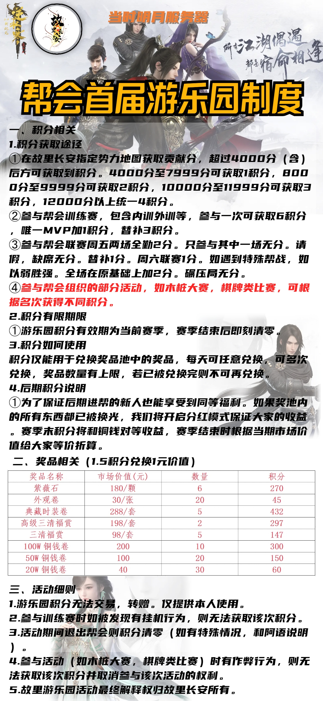

    <!-- Begin #services-section -->
    <section id="services" class="services-section section-global-wrapper">
        <div class="container">
            <div class="row">
                <div class="services-header">
                    <h3 class="services-header-title">近期活动</h3>
                </div>
            </div>
            
            <br>
        </div>      
    </section>
</html>
